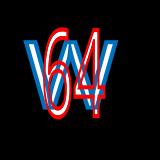

Your all-in-one retro game emulator. To start, select the console your game was originally released on.
No console matches that search.
GameCube, Wii, Wii U, 3DS, PS2 and PS3 are too demanding for any browser emulator today.
Use Dolphin, Cemu, Azahar, PCSX2 and RPCS3 on your desktop for those.